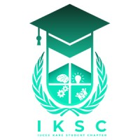

IUCEE (Indo Universal Collaboration for Engineering Education) An initiative to enhance the quality and global relevance of engineering education in India through international collaboration and expert guidance. The IUCEE-KARE Chapter supports this mission at Kalasalingam University by promoting outcome-based education, expert engagement, and continuous learning
1)Recruitment Program: RPSO2024 - Between September 3 and September 30, 2024, the recruitment program for first, second, and third-year students was successfully completed, focusing on student member recruitment and internal department placements.
2)Connect & Inspire: IKSC Introductory Session 2024 – On October 6, 2024, a Google Meet session was held to introduce new student members to the IUCEE KARE Student Chapter, featuring a quiz activity titled "Guess It!"